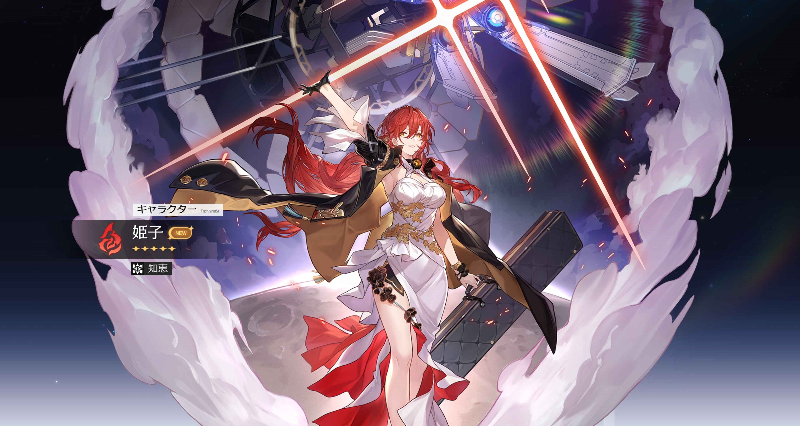
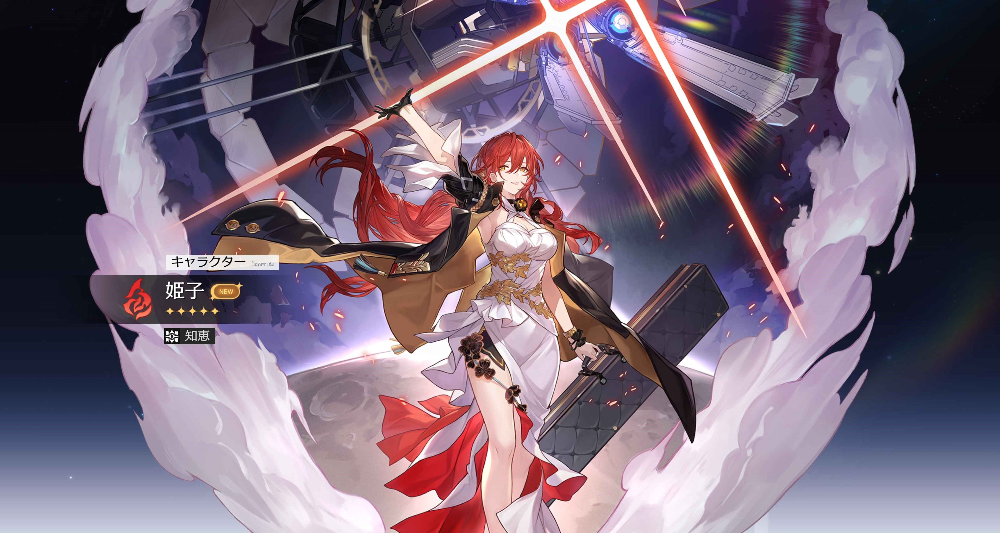

黄泉復刻
2024年12月2日
実は、前回の黄泉さんPickUpガチャではすり抜けてしまい、 黄泉さんをお迎えすることができなかったので、今回の復刻で今度こそと思い黄泉さんの復刻ガチャを回しました。
結果はまたしてもすり抜け.....
どうやら私のガチャ運が悪いようで、また復刻される際には、たくさん原石を用意してリベンジしたいと思います。♦
実は、前回の黄泉さんPickUpガチャではすり抜けてしまい、 黄泉さんをお迎えすることができなかったので、今回の復刻で今度こそと思い黄泉さんの復刻ガチャを回しました。
結果はまたしてもすり抜け.....
どうやら私のガチャ運が悪いようで、また復刻される際には、たくさん原石を用意してリベンジしたいと思います。♦
本日、Ver.2.1アップデートが行われました。
新キャラクターの黄泉は、虚無の運命を歩む雷属性キャラです！
黄泉さんは通常のキャラと異なり必殺ゲージなるものが無いようで少し変わった性能をしているそうです
そして秘技ではフィールドに湧いている雑魚敵をワンパン撃破できる(ぶっ飛び性能では？)ので探索や日課が捗りそうです
ちなみに戦闘モーションめちゃくちゃかっこよかったです強化状態の時の演出も素敵でした
キャラ性能もビジュアルも最強＆最高で思わず衝動的に引きたくなっちゃいます★
「天外衛星通信」 黄泉（よみ）
— 崩壊：スターレイル (@houkaistarrail) January 23, 2024
CV: #沢城みゆき
「銀河を独り歩む人が渇望していることは2つ。
先達の歩いた道を見つけるか、自分だけの道を見つけるかだ。
しかし星神の眼差しのもとで…後者を達成できた人はほとんどいない」… pic.twitter.com/j36RZ0e8fF
↑公式より、黄泉の立ち絵の引用です。）
あと、後半ガチャではアベンチュリンも実装されるということなので性能に期待ですね
「天外衛星通信」 アベンチュリン
— 崩壊：スターレイル (@houkaistarrail) January 24, 2024
CV: #河西健吾
「僕のことは好きなように利用してもいいし、裏切ったって構わない。
利用と裏切りは価値交換の手段だからね。
でも、僕は損する取引はしない主義だから…君も、僕をガッカリさせないように」… pic.twitter.com/xSRaxBqOW8
メインストーリの追加もあり、今後のピノコニーの行方が気になりますね(≧∇≦)ﾉ(私は数日かけてストーリーを楽しもうと思います。)
そして、今回のアップデートにて初の試みとなる様々なキャラクターの視点で物語を進める「運命を歩む群像」というシステムが追加されました。 (これも超たのしみ)
加えて本バージョンは崩壊スターレイル一周年記念ということでなんと30連配布が行われるようです！！！！
ということでバージョン2.1楽しみましょう！！！！